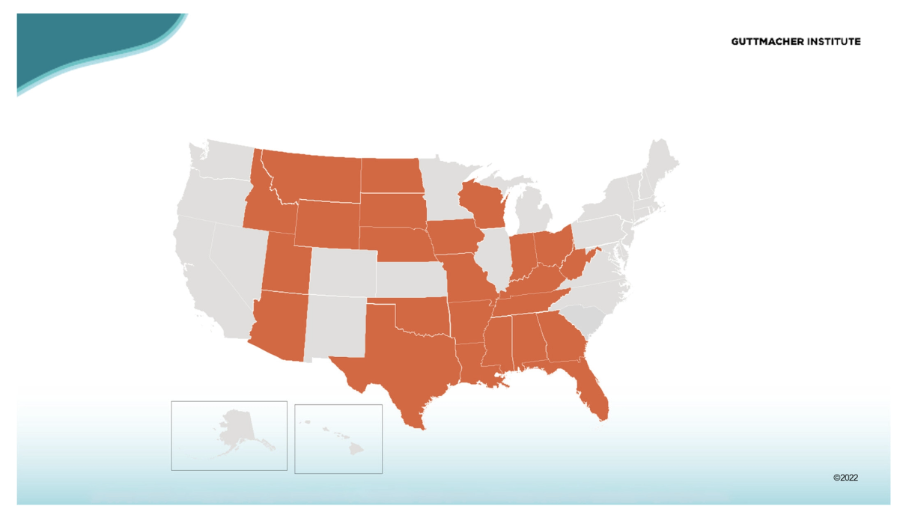
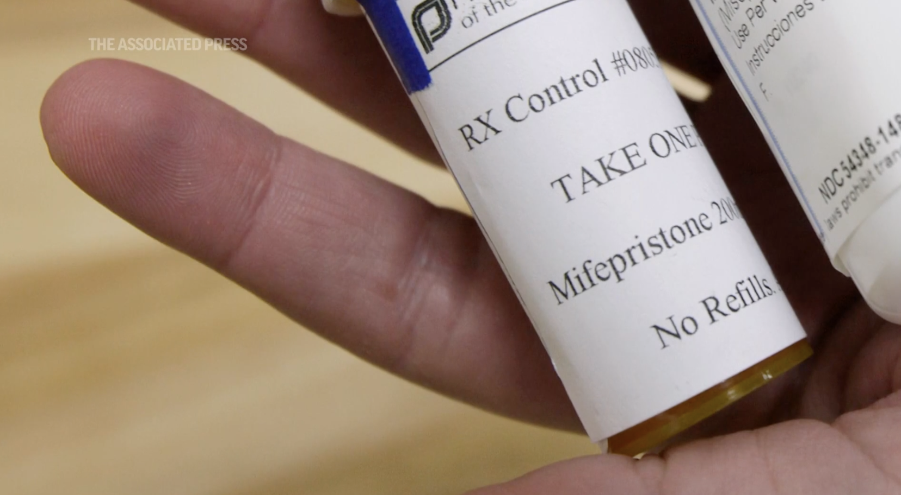

Latest News
Stay informed about the latest developments in abortion policy and access. We bring you the most up-to-date news and information, so you can stay current on this important issue.

Victory for Abortion Rights: How Grassroots Organizing Overturned an Archaic Law in Michigan
Read about the grassroots organizing efforts led by ACLU of Michigan, Planned Parenthood Advocates of Michigan, and Michigan Voices to protect abortion rights in Michigan following the Supreme Court's overturning of Roe v. Wade. The article describes how the coalition launched a citizen-led ballot campaign called Reproductive Freedom for All (RFFA), collected a record-breaking number of signatures from registered Michigan voters, and navigated legal challenges to get the measure approved for the November ballot.

Abortion Access in Jeopardy: New Study Reveals Financial Barriers Faced by Patients in Restricted States Before Roe v. Wade Overturned
The Guttmacher Institute released findings from their sixth Abortion Patient Survey, which provides baseline data on the experiences of people seeking abortion care in the 12 months before Roe v. Wade was overturned in June 2022. The study underscores the need for policies aimed at protecting access to abortion, including federal legislation such as the Women's Health Protection Act and state-level measures to defend access to abortion in protective states.

Supreme Court Delays Decision on Abortion Pill Restrictions Amid Legal Challenge
The U.S. Supreme Court is delaying a decision on whether to allow restrictions on the abortion pill mifepristone to take effect until at least Friday, while considering a legal challenge to the medication's Food and Drug Administration (FDA) approval. The court is dealing with a new abortion controversy less than a year after its conservative majority overturned Roe v. Wade and allowed more than a dozen states to effectively ban abortion outright. The Biden administration and the maker of the drug are urging the court to reject the limits on its use imposed by lower courts, while anti-abortion groups are calling for restrictions to be enforced.